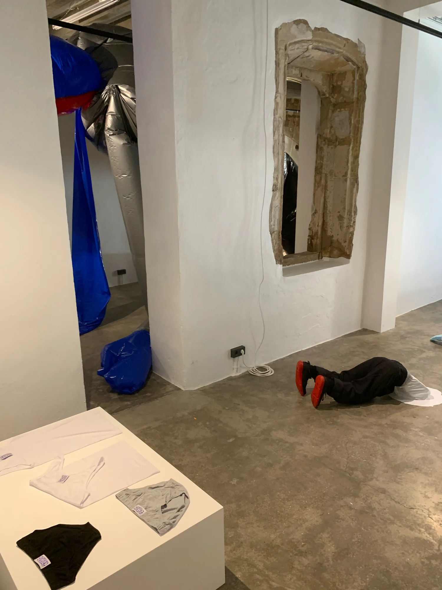
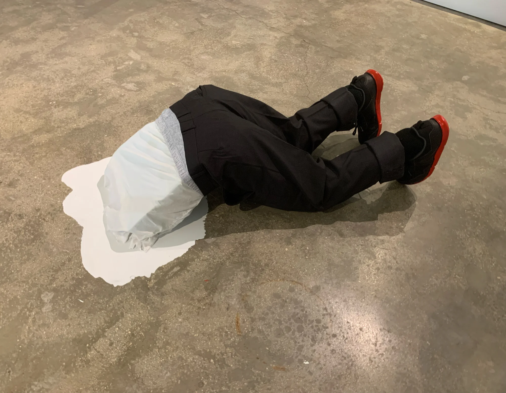
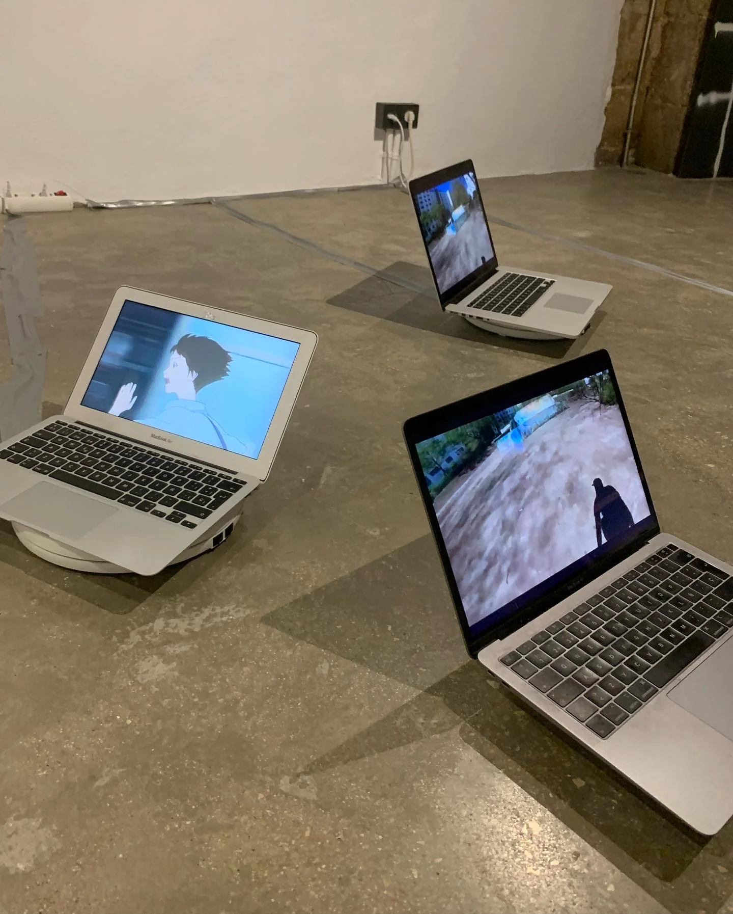
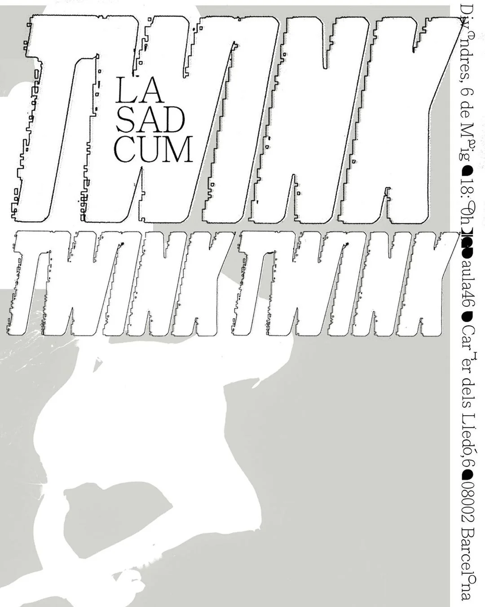
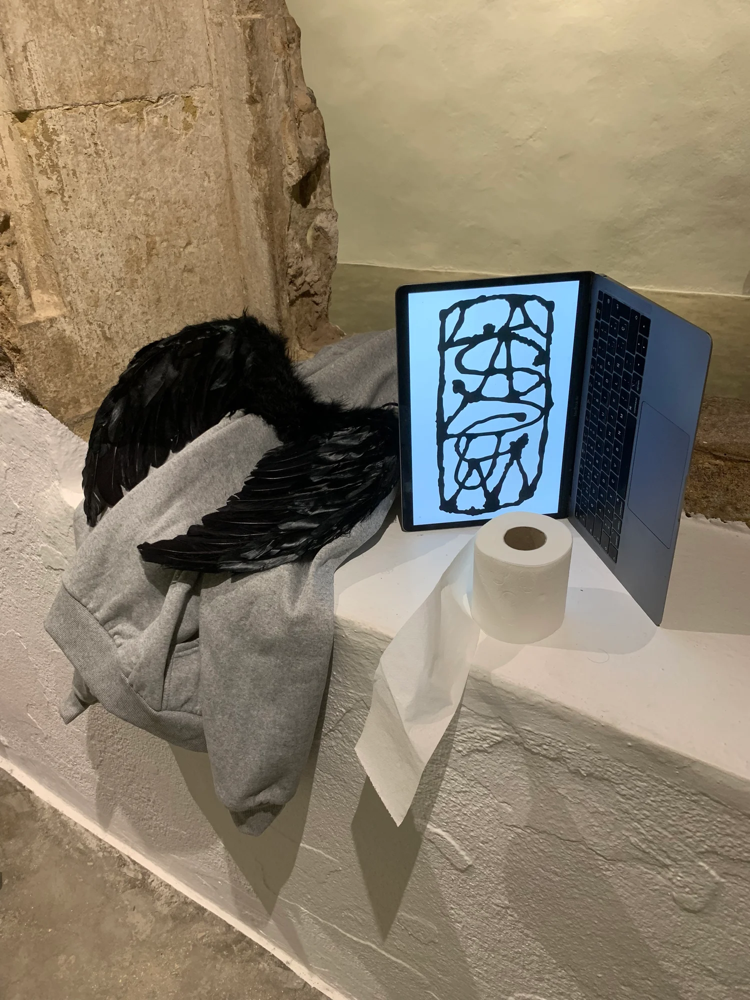

TWINK TWINK TWINK (2022)
exposició / laSADCUM
‘TWINK TWINK TWINK’ és un viatge per l'aprenentatge virtual d'una generació d'adolescents saturats, al so de l'emblemàtica obra de Stravinski ‘Le Sacre du Printemps’, que tants coreògrafs han interpretat. L'esbós d'un projecte sobre els cossos generats per l'aprenentatge virtual des d'una perspectiva coreogràfica i pornogràfica; el moment de transició de nen a home com un fetitxe que, igual que la Sacre, torna una vegada i una altra.
Es va fer la Sacre i vaig tornar a ballar. Vaig aprendre a ballar a través del que veia, a parlar en anglès, a vestir-me i a follar. Però vaig aprendre a veure això, vaig aprendre, ja no sé el que. El meu ‘crush’ d'adolescent va ser un home de 40 que penetrava a un de 18.
La influència de les imatges de cossos en el meu cos: ho esculpeixen, ho modulen i ho programen. Es va fer una altra Sacre: un noi en uniforme, de cos uniforme, un nen transitant a home, el meu ‘crush’ d'adolescent que a tants va embullar. Bec de totes les imatges que vaig consumir tancat en el bany, construint el meu algoritme. Nen que muta a home: torna la Sacre.
On my 18th birthday, I was alone in Shanghai, and I just got a SAD CUM alone in bed.
- Concepte
- Guillem Jiménez
- Construcció
- Oriol Corral
- Edició de video
- Guillem Jiménez
- Coproducció
- aula46
Fotos: laSADCUM · Cartell: PZ Albert




